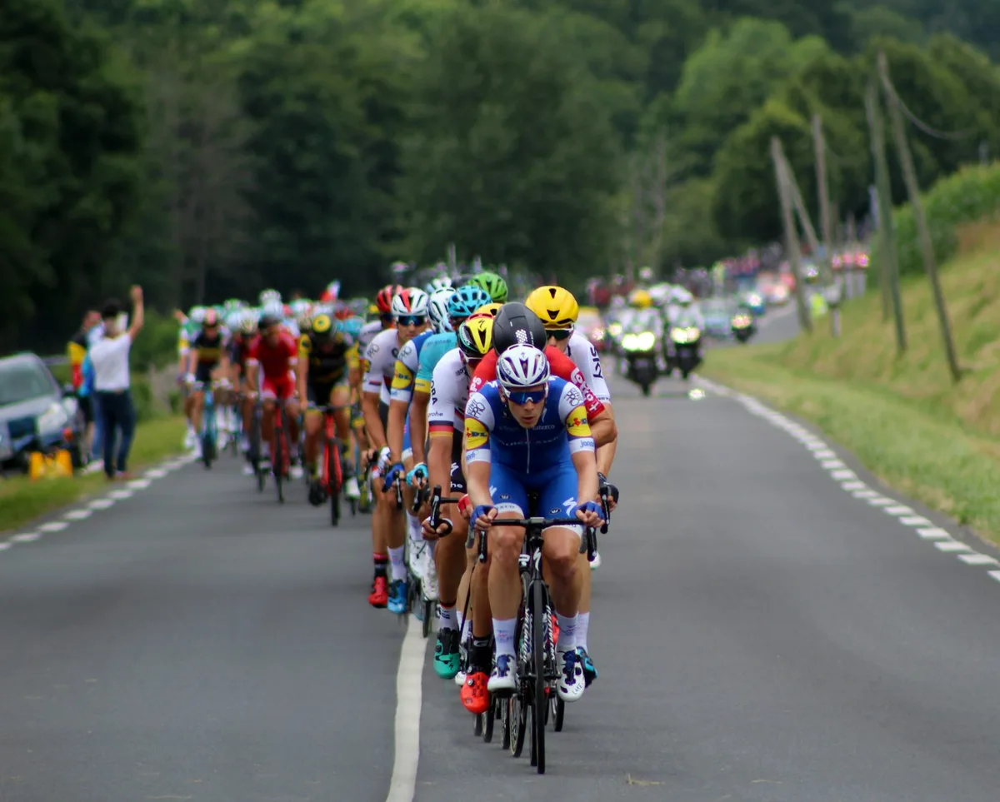
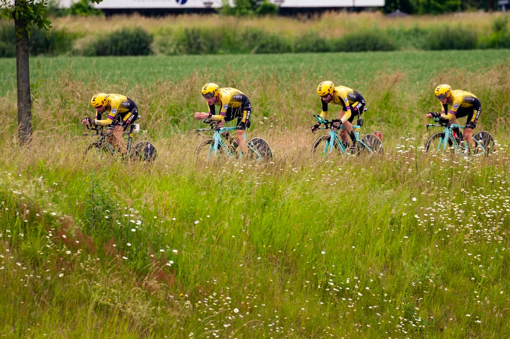
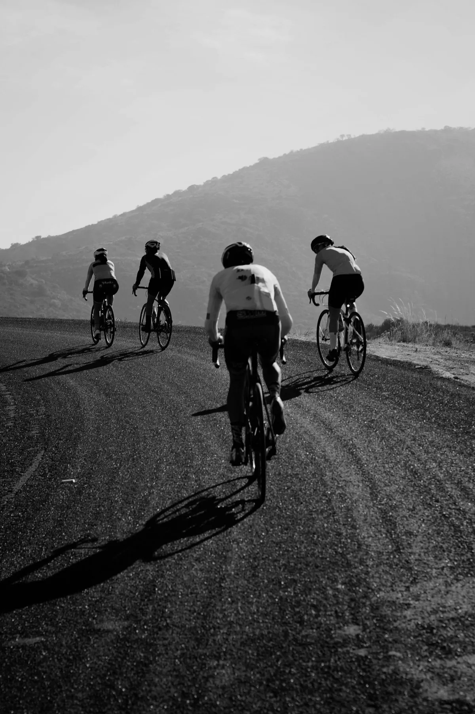
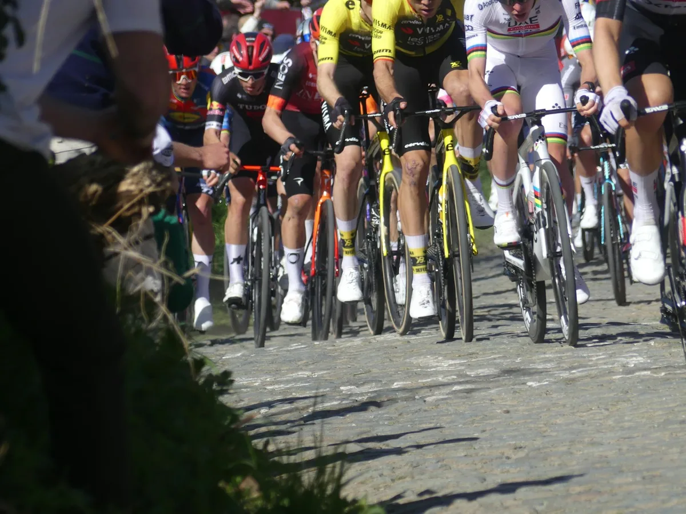
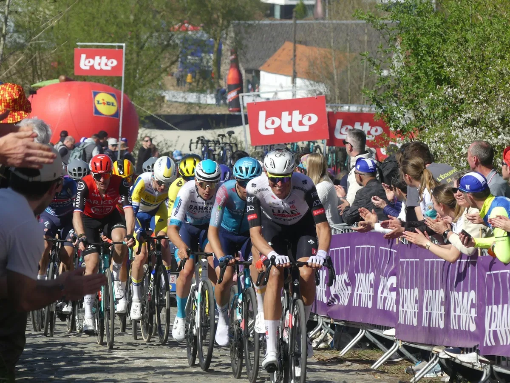

Catalogue des tracés
Les parcours
Les boucles signatures du Club. Du pavé pur à la côte d'Opale, en passant par les monts flamands et le gravel de la Scarpe — douze parcours homologués, tracés GPX disponibles.

Street View
№ 01
27 secteurs · pavé
Paris-Roubaix reco
Vingt-sept secteurs, du sous-bois au vélodrome.
172km
Distance
820m
D+
54km
Pavé
Street View
№ 02
Monts des Flandres
Cassel · Kemmelberg · Mont Noir
76km
Distance
1640m
D+
8
Côtes

Street View
№ 03
La Scarpe en gravel
Forêt · Saint-Amand · Raismes
68km
Distance
1240m
D+
80%
Chemin

Street View
№ 04
Côte d'Opale
Boulogne · Cap Gris-Nez · Audinghen
104km
Distance
1380m
D+
6
Caps

Street View
№ 05
Tour de l'Avesnois
Bocage · Maroilles · Sars-Poteries
112km
Distance
1980m
D+
4h15
Durée

Street View
№ 06
Boucle du Pévèle
Orchies · Mons-en-Pévèle · Templeuve
82km
Distance
340m
D+
18km
Pavé